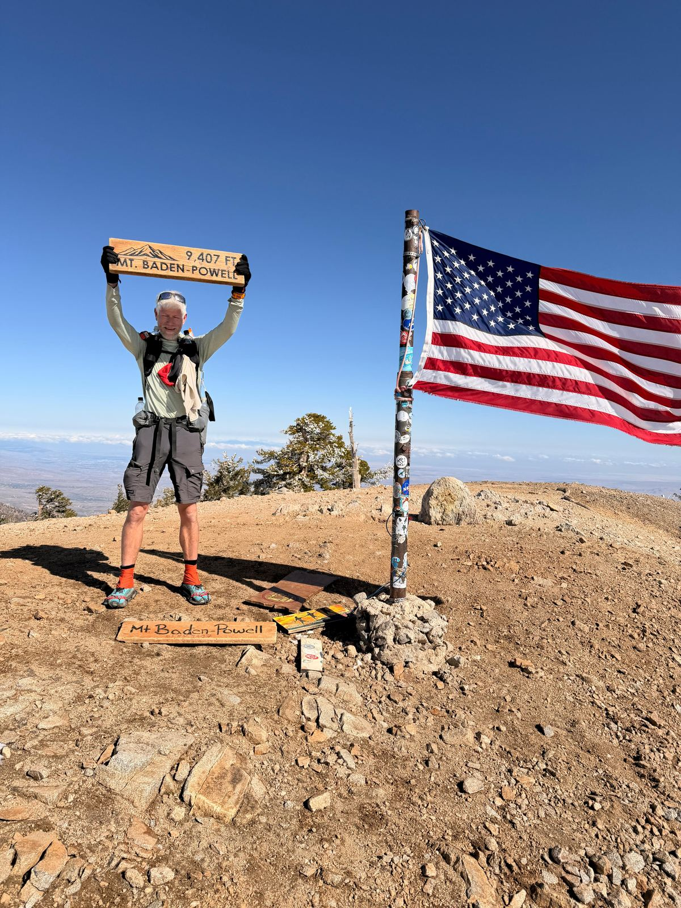

Trail log · Garmin export
Alle geregistreerde activiteiten op het traject
Hoogtemeters (stijging) per dag over het hele traject — beweeg over de grafiek voor details
Totaal netto omhoog geklommen op het traject
Opgeteld aantal km per weekblok sinds de start
De zwaarste dagen op het traject